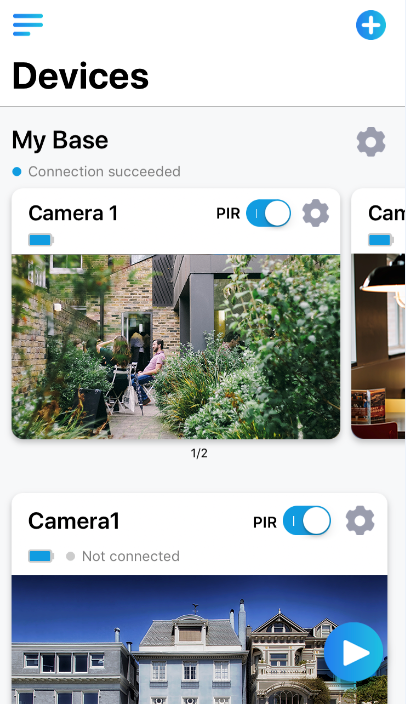

StreamView is a free APP for your iPhone, with this software you can view your DVR/ NVR/IP camera anywhere and anytime. Our Peer to peer technology, easy network configuration can assist you to master this app very fast. Now let us start navigation for StreamView:
i. Add new device

The first time login StreamView, you will see the screen shown above, tap ”Add New Device” and you will go to below screen:

Tap the QR code icon to open the scanning page, and scan the QR code from your DVR/ NVR/IP camera GUI interface, you will see a serial No. and letters on the “UID” line after QR code is scanned successfully. “Device name” give it any one you like or by the location, like “office”. “User name” and “password”, input the user name and password you set for the device. Tap the “save” button at the top-right to save your configuration. The app would verify and test your connection, if successfully added, click “Start Preview ”button.
ii. Preview
Now you see live view from all the cameras you connected, let’s get familiar with various options on this screen.
1. Menu - tap this to get the access for adding, editing, deleting a device, as well as view the local information that include help and software version. Tap the button “! ” to exit menu.
2. Preview - Tap this to access live view mode, a blue boarder will surround the currently selected channel. Double tap the selected channel, you will get full screen, double tap again to return.
3. Playback - Tap this to remotely playback the video from DVR/NVR.
4. Channel list - Tap this to get the channel list, to enable or disable the camera on your mobile device.
5. Group indicator-when you viewing a single channel or 4 channels or 8 channels, the blue dot shows which channel or group of channels you are viewing, swipe left or right to change to different channel or group of channels.
6. Capture - Tap this to get a snapshot to the selected channel and save it directly to your mobile device.
7. Close All/Play All – Tap this to close the preview of all channels on screen, tap again to restart.
8. Record – Tap this to record video from selected channel directly to your mobile device, tap again to stop recording.
9. PTZ - Tap this you will get a full screen of selected channel, with the “IRIS” “FOCUS” “ ZOOM” and “AUTO” buttons to adjust your PTZ camera.
10. Screens – You can select to view 1/4/9/16 channels at the same time, depending on the capability of your DVR/NVR/IP camera, the internet connection and the capability of your mobile device, if you have a slower internet connection and less capable device, make it maximum 4 channels view.
11. Close/Play – Tap this to close the preview of selected channel, tap again to restart.
12. Stream – Tap this to change the image quality of live view, Fluent (more smoother movement)/Balanced (medium quality image) /Clear (higher quality image), clear mode will consume more band width, and if you select clear mode, please note, only one channel can be viewed.
13. Sound – Tap this to open/close audio.
iii. Remote Playback
Drag the timeline to anywhere you want to see the playback.
“Capture”: tap to save the picture to your mobile phone, saving path will be reminded when you tap the capture button.
“Record”: tap to save playback recording to your mobile phone, saving path will be reminded when you tap the record button.
“Stop”: tap to continue or stop the playback.
“Sound”: Tap this to open/close recorded audio.
Kindly Advice:
Turn your mobile device horizontally to get a larger display window: For preview and playback, if you want to get a larger display window, just turn your mobile device horizontally, you can get a full screen: